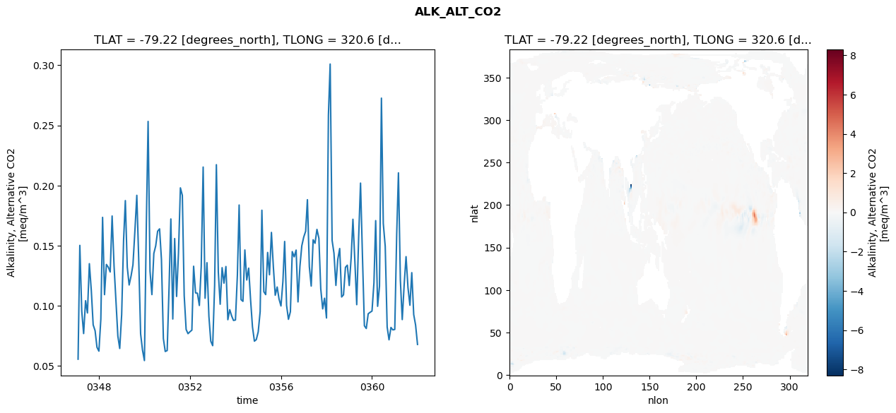
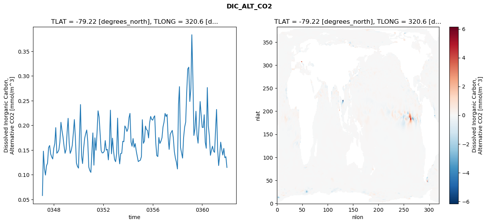
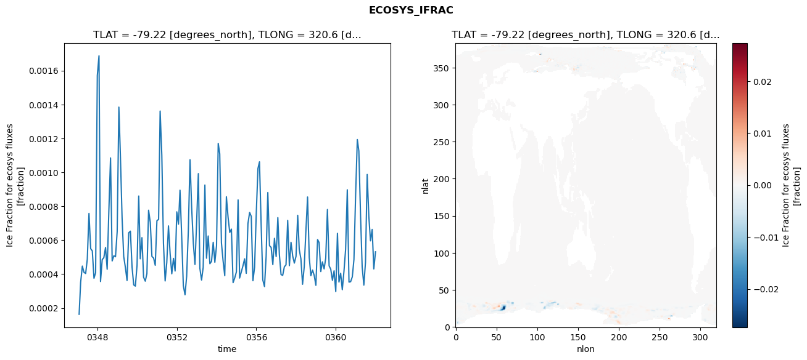
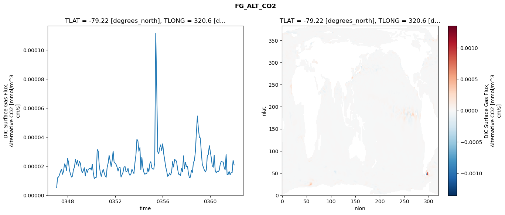

glb-dor_North_Atlantic_basin_045_1999-01-01_00180#
Simulation details#
Case: smyle.cdr-atlas-v0.glb-dor_North_Atlantic_basin_045_1999-01-01_00180.001
Basin: North_Atlantic_basin
Polygon: 45.0
Start date: 1999-01
Show code cell source Hide code cell source
import xarray as xr
import matplotlib.pyplot as plt
Show code cell source Hide code cell source
zarr_store = "/path/to/zarr/store"
# Parameters
zarr_store = "/global/cfs/projectdirs/m4746/Projects/Ocean-CDR-Atlas-v0/data/validation/smyle.cdr-atlas-v0.glb-dor_North_Atlantic_basin_045_1999-01-01_00180.001.validation.zarr"
Show code cell source Hide code cell source
%%time
ds_o = xr.open_zarr(zarr_store).compute()
ds_o
CPU times: user 633 ms, sys: 398 ms, total: 1.03 s
Wall time: 1.24 s
<xarray.Dataset> Size: 2MB
Dimensions: (nlat: 384, nlon: 320, time: 180)
Coordinates:
TLAT float64 8B -79.22
TLONG float64 8B 320.6
ULAT float64 8B -78.95
ULONG float64 8B 321.1
* time (time) object 1kB 0347-02-01 00:00:00 ... 0362-01-01 0...
z_t float32 4B 500.0
Dimensions without coordinates: nlat, nlon
Data variables:
ALK_ALT_CO2_diff (nlat, nlon) float32 492kB nan nan nan ... nan nan nan
ALK_ALT_CO2_rmse (time) float64 1kB 0.05554 0.1502 ... 0.08394 0.0678
DIC_ALT_CO2_diff (nlat, nlon) float32 492kB nan nan nan ... nan nan nan
DIC_ALT_CO2_rmse (time) float64 1kB 0.05778 0.1477 ... 0.1364 0.1147
ECOSYS_IFRAC_diff (nlat, nlon) float32 492kB nan nan nan ... nan nan nan
ECOSYS_IFRAC_rmse (time) float64 1kB 0.0001631 0.0003519 ... 0.0005315
FG_ALT_CO2_diff (nlat, nlon) float32 492kB nan nan nan ... nan nan nan
FG_ALT_CO2_rmse (time) float64 1kB 5.066e-06 1.188e-05 ... 2.073e-05xarray.Dataset
- nlat: 384
- nlon: 320
- time: 180
- TLAT()float64-79.22
- long_name :
- array of t-grid latitudes
- units :
- degrees_north
array(-79.22052261)
- TLONG()float64320.6
- long_name :
- array of t-grid longitudes
- units :
- degrees_east
array(320.56250892)
- ULAT()float64-78.95
- long_name :
- array of u-grid latitudes
- units :
- degrees_north
array(-78.95289509)
- ULONG()float64321.1
- long_name :
- array of u-grid longitudes
- units :
- degrees_east
array(321.12500894)
- time(time)object0347-02-01 00:00:00 ... 0362-01-...
- bounds :
- time_bound
- long_name :
- time
array([cftime.DatetimeNoLeap(347, 2, 1, 0, 0, 0, 0, has_year_zero=True), cftime.DatetimeNoLeap(347, 3, 1, 0, 0, 0, 0, has_year_zero=True), cftime.DatetimeNoLeap(347, 4, 1, 0, 0, 0, 0, has_year_zero=True), cftime.DatetimeNoLeap(347, 5, 1, 0, 0, 0, 0, has_year_zero=True), cftime.DatetimeNoLeap(347, 6, 1, 0, 0, 0, 0, has_year_zero=True), cftime.DatetimeNoLeap(347, 7, 1, 0, 0, 0, 0, has_year_zero=True), cftime.DatetimeNoLeap(347, 8, 1, 0, 0, 0, 0, has_year_zero=True), cftime.DatetimeNoLeap(347, 9, 1, 0, 0, 0, 0, has_year_zero=True), cftime.DatetimeNoLeap(347, 10, 1, 0, 0, 0, 0, has_year_zero=True), cftime.DatetimeNoLeap(347, 11, 1, 0, 0, 0, 0, has_year_zero=True), cftime.DatetimeNoLeap(347, 12, 1, 0, 0, 0, 0, has_year_zero=True), cftime.DatetimeNoLeap(348, 1, 1, 0, 0, 0, 0, has_year_zero=True), cftime.DatetimeNoLeap(348, 2, 1, 0, 0, 0, 0, has_year_zero=True), cftime.DatetimeNoLeap(348, 3, 1, 0, 0, 0, 0, has_year_zero=True), cftime.DatetimeNoLeap(348, 4, 1, 0, 0, 0, 0, has_year_zero=True), cftime.DatetimeNoLeap(348, 5, 1, 0, 0, 0, 0, has_year_zero=True), cftime.DatetimeNoLeap(348, 6, 1, 0, 0, 0, 0, has_year_zero=True), cftime.DatetimeNoLeap(348, 7, 1, 0, 0, 0, 0, has_year_zero=True), cftime.DatetimeNoLeap(348, 8, 1, 0, 0, 0, 0, has_year_zero=True), cftime.DatetimeNoLeap(348, 9, 1, 0, 0, 0, 0, has_year_zero=True), cftime.DatetimeNoLeap(348, 10, 1, 0, 0, 0, 0, has_year_zero=True), cftime.DatetimeNoLeap(348, 11, 1, 0, 0, 0, 0, has_year_zero=True), cftime.DatetimeNoLeap(348, 12, 1, 0, 0, 0, 0, has_year_zero=True), cftime.DatetimeNoLeap(349, 1, 1, 0, 0, 0, 0, has_year_zero=True), cftime.DatetimeNoLeap(349, 2, 1, 0, 0, 0, 0, has_year_zero=True), cftime.DatetimeNoLeap(349, 3, 1, 0, 0, 0, 0, has_year_zero=True), cftime.DatetimeNoLeap(349, 4, 1, 0, 0, 0, 0, has_year_zero=True), cftime.DatetimeNoLeap(349, 5, 1, 0, 0, 0, 0, has_year_zero=True), cftime.DatetimeNoLeap(349, 6, 1, 0, 0, 0, 0, has_year_zero=True), cftime.DatetimeNoLeap(349, 7, 1, 0, 0, 0, 0, has_year_zero=True), cftime.DatetimeNoLeap(349, 8, 1, 0, 0, 0, 0, has_year_zero=True), cftime.DatetimeNoLeap(349, 9, 1, 0, 0, 0, 0, has_year_zero=True), cftime.DatetimeNoLeap(349, 10, 1, 0, 0, 0, 0, has_year_zero=True), cftime.DatetimeNoLeap(349, 11, 1, 0, 0, 0, 0, has_year_zero=True), cftime.DatetimeNoLeap(349, 12, 1, 0, 0, 0, 0, has_year_zero=True), cftime.DatetimeNoLeap(350, 1, 1, 0, 0, 0, 0, has_year_zero=True), cftime.DatetimeNoLeap(350, 2, 1, 0, 0, 0, 0, has_year_zero=True), cftime.DatetimeNoLeap(350, 3, 1, 0, 0, 0, 0, has_year_zero=True), cftime.DatetimeNoLeap(350, 4, 1, 0, 0, 0, 0, has_year_zero=True), cftime.DatetimeNoLeap(350, 5, 1, 0, 0, 0, 0, has_year_zero=True), cftime.DatetimeNoLeap(350, 6, 1, 0, 0, 0, 0, has_year_zero=True), cftime.DatetimeNoLeap(350, 7, 1, 0, 0, 0, 0, has_year_zero=True), cftime.DatetimeNoLeap(350, 8, 1, 0, 0, 0, 0, has_year_zero=True), cftime.DatetimeNoLeap(350, 9, 1, 0, 0, 0, 0, has_year_zero=True), cftime.DatetimeNoLeap(350, 10, 1, 0, 0, 0, 0, has_year_zero=True), cftime.DatetimeNoLeap(350, 11, 1, 0, 0, 0, 0, has_year_zero=True), cftime.DatetimeNoLeap(350, 12, 1, 0, 0, 0, 0, has_year_zero=True), cftime.DatetimeNoLeap(351, 1, 1, 0, 0, 0, 0, has_year_zero=True), cftime.DatetimeNoLeap(351, 2, 1, 0, 0, 0, 0, has_year_zero=True), cftime.DatetimeNoLeap(351, 3, 1, 0, 0, 0, 0, has_year_zero=True), cftime.DatetimeNoLeap(351, 4, 1, 0, 0, 0, 0, has_year_zero=True), cftime.DatetimeNoLeap(351, 5, 1, 0, 0, 0, 0, has_year_zero=True), cftime.DatetimeNoLeap(351, 6, 1, 0, 0, 0, 0, has_year_zero=True), cftime.DatetimeNoLeap(351, 7, 1, 0, 0, 0, 0, has_year_zero=True), cftime.DatetimeNoLeap(351, 8, 1, 0, 0, 0, 0, has_year_zero=True), cftime.DatetimeNoLeap(351, 9, 1, 0, 0, 0, 0, has_year_zero=True), cftime.DatetimeNoLeap(351, 10, 1, 0, 0, 0, 0, has_year_zero=True), cftime.DatetimeNoLeap(351, 11, 1, 0, 0, 0, 0, has_year_zero=True), cftime.DatetimeNoLeap(351, 12, 1, 0, 0, 0, 0, has_year_zero=True), cftime.DatetimeNoLeap(352, 1, 1, 0, 0, 0, 0, has_year_zero=True), cftime.DatetimeNoLeap(352, 2, 1, 0, 0, 0, 0, has_year_zero=True), cftime.DatetimeNoLeap(352, 3, 1, 0, 0, 0, 0, has_year_zero=True), cftime.DatetimeNoLeap(352, 4, 1, 0, 0, 0, 0, has_year_zero=True), cftime.DatetimeNoLeap(352, 5, 1, 0, 0, 0, 0, has_year_zero=True), cftime.DatetimeNoLeap(352, 6, 1, 0, 0, 0, 0, has_year_zero=True), cftime.DatetimeNoLeap(352, 7, 1, 0, 0, 0, 0, has_year_zero=True), cftime.DatetimeNoLeap(352, 8, 1, 0, 0, 0, 0, has_year_zero=True), cftime.DatetimeNoLeap(352, 9, 1, 0, 0, 0, 0, has_year_zero=True), cftime.DatetimeNoLeap(352, 10, 1, 0, 0, 0, 0, has_year_zero=True), cftime.DatetimeNoLeap(352, 11, 1, 0, 0, 0, 0, has_year_zero=True), cftime.DatetimeNoLeap(352, 12, 1, 0, 0, 0, 0, has_year_zero=True), cftime.DatetimeNoLeap(353, 1, 1, 0, 0, 0, 0, has_year_zero=True), cftime.DatetimeNoLeap(353, 2, 1, 0, 0, 0, 0, has_year_zero=True), cftime.DatetimeNoLeap(353, 3, 1, 0, 0, 0, 0, has_year_zero=True), cftime.DatetimeNoLeap(353, 4, 1, 0, 0, 0, 0, has_year_zero=True), cftime.DatetimeNoLeap(353, 5, 1, 0, 0, 0, 0, has_year_zero=True), cftime.DatetimeNoLeap(353, 6, 1, 0, 0, 0, 0, has_year_zero=True), cftime.DatetimeNoLeap(353, 7, 1, 0, 0, 0, 0, has_year_zero=True), cftime.DatetimeNoLeap(353, 8, 1, 0, 0, 0, 0, has_year_zero=True), cftime.DatetimeNoLeap(353, 9, 1, 0, 0, 0, 0, has_year_zero=True), cftime.DatetimeNoLeap(353, 10, 1, 0, 0, 0, 0, has_year_zero=True), cftime.DatetimeNoLeap(353, 11, 1, 0, 0, 0, 0, has_year_zero=True), cftime.DatetimeNoLeap(353, 12, 1, 0, 0, 0, 0, has_year_zero=True), cftime.DatetimeNoLeap(354, 1, 1, 0, 0, 0, 0, has_year_zero=True), cftime.DatetimeNoLeap(354, 2, 1, 0, 0, 0, 0, has_year_zero=True), cftime.DatetimeNoLeap(354, 3, 1, 0, 0, 0, 0, has_year_zero=True), cftime.DatetimeNoLeap(354, 4, 1, 0, 0, 0, 0, has_year_zero=True), cftime.DatetimeNoLeap(354, 5, 1, 0, 0, 0, 0, has_year_zero=True), cftime.DatetimeNoLeap(354, 6, 1, 0, 0, 0, 0, has_year_zero=True), cftime.DatetimeNoLeap(354, 7, 1, 0, 0, 0, 0, has_year_zero=True), cftime.DatetimeNoLeap(354, 8, 1, 0, 0, 0, 0, has_year_zero=True), cftime.DatetimeNoLeap(354, 9, 1, 0, 0, 0, 0, has_year_zero=True), cftime.DatetimeNoLeap(354, 10, 1, 0, 0, 0, 0, has_year_zero=True), cftime.DatetimeNoLeap(354, 11, 1, 0, 0, 0, 0, has_year_zero=True), cftime.DatetimeNoLeap(354, 12, 1, 0, 0, 0, 0, has_year_zero=True), cftime.DatetimeNoLeap(355, 1, 1, 0, 0, 0, 0, has_year_zero=True), cftime.DatetimeNoLeap(355, 2, 1, 0, 0, 0, 0, has_year_zero=True), cftime.DatetimeNoLeap(355, 3, 1, 0, 0, 0, 0, has_year_zero=True), cftime.DatetimeNoLeap(355, 4, 1, 0, 0, 0, 0, has_year_zero=True), cftime.DatetimeNoLeap(355, 5, 1, 0, 0, 0, 0, has_year_zero=True), cftime.DatetimeNoLeap(355, 6, 1, 0, 0, 0, 0, has_year_zero=True), cftime.DatetimeNoLeap(355, 7, 1, 0, 0, 0, 0, has_year_zero=True), cftime.DatetimeNoLeap(355, 8, 1, 0, 0, 0, 0, has_year_zero=True), cftime.DatetimeNoLeap(355, 9, 1, 0, 0, 0, 0, has_year_zero=True), cftime.DatetimeNoLeap(355, 10, 1, 0, 0, 0, 0, has_year_zero=True), cftime.DatetimeNoLeap(355, 11, 1, 0, 0, 0, 0, has_year_zero=True), cftime.DatetimeNoLeap(355, 12, 1, 0, 0, 0, 0, has_year_zero=True), cftime.DatetimeNoLeap(356, 1, 1, 0, 0, 0, 0, has_year_zero=True), cftime.DatetimeNoLeap(356, 2, 1, 0, 0, 0, 0, has_year_zero=True), cftime.DatetimeNoLeap(356, 3, 1, 0, 0, 0, 0, has_year_zero=True), cftime.DatetimeNoLeap(356, 4, 1, 0, 0, 0, 0, has_year_zero=True), cftime.DatetimeNoLeap(356, 5, 1, 0, 0, 0, 0, has_year_zero=True), cftime.DatetimeNoLeap(356, 6, 1, 0, 0, 0, 0, has_year_zero=True), cftime.DatetimeNoLeap(356, 7, 1, 0, 0, 0, 0, has_year_zero=True), cftime.DatetimeNoLeap(356, 8, 1, 0, 0, 0, 0, has_year_zero=True), cftime.DatetimeNoLeap(356, 9, 1, 0, 0, 0, 0, has_year_zero=True), cftime.DatetimeNoLeap(356, 10, 1, 0, 0, 0, 0, has_year_zero=True), cftime.DatetimeNoLeap(356, 11, 1, 0, 0, 0, 0, has_year_zero=True), cftime.DatetimeNoLeap(356, 12, 1, 0, 0, 0, 0, has_year_zero=True), cftime.DatetimeNoLeap(357, 1, 1, 0, 0, 0, 0, has_year_zero=True), cftime.DatetimeNoLeap(357, 2, 1, 0, 0, 0, 0, has_year_zero=True), cftime.DatetimeNoLeap(357, 3, 1, 0, 0, 0, 0, has_year_zero=True), cftime.DatetimeNoLeap(357, 4, 1, 0, 0, 0, 0, has_year_zero=True), cftime.DatetimeNoLeap(357, 5, 1, 0, 0, 0, 0, has_year_zero=True), cftime.DatetimeNoLeap(357, 6, 1, 0, 0, 0, 0, has_year_zero=True), cftime.DatetimeNoLeap(357, 7, 1, 0, 0, 0, 0, has_year_zero=True), cftime.DatetimeNoLeap(357, 8, 1, 0, 0, 0, 0, has_year_zero=True), cftime.DatetimeNoLeap(357, 9, 1, 0, 0, 0, 0, has_year_zero=True), cftime.DatetimeNoLeap(357, 10, 1, 0, 0, 0, 0, has_year_zero=True), cftime.DatetimeNoLeap(357, 11, 1, 0, 0, 0, 0, has_year_zero=True), cftime.DatetimeNoLeap(357, 12, 1, 0, 0, 0, 0, has_year_zero=True), cftime.DatetimeNoLeap(358, 1, 1, 0, 0, 0, 0, has_year_zero=True), cftime.DatetimeNoLeap(358, 2, 1, 0, 0, 0, 0, has_year_zero=True), cftime.DatetimeNoLeap(358, 3, 1, 0, 0, 0, 0, has_year_zero=True), cftime.DatetimeNoLeap(358, 4, 1, 0, 0, 0, 0, has_year_zero=True), cftime.DatetimeNoLeap(358, 5, 1, 0, 0, 0, 0, has_year_zero=True), cftime.DatetimeNoLeap(358, 6, 1, 0, 0, 0, 0, has_year_zero=True), cftime.DatetimeNoLeap(358, 7, 1, 0, 0, 0, 0, has_year_zero=True), cftime.DatetimeNoLeap(358, 8, 1, 0, 0, 0, 0, has_year_zero=True), cftime.DatetimeNoLeap(358, 9, 1, 0, 0, 0, 0, has_year_zero=True), cftime.DatetimeNoLeap(358, 10, 1, 0, 0, 0, 0, has_year_zero=True), cftime.DatetimeNoLeap(358, 11, 1, 0, 0, 0, 0, has_year_zero=True), cftime.DatetimeNoLeap(358, 12, 1, 0, 0, 0, 0, has_year_zero=True), cftime.DatetimeNoLeap(359, 1, 1, 0, 0, 0, 0, has_year_zero=True), cftime.DatetimeNoLeap(359, 2, 1, 0, 0, 0, 0, has_year_zero=True), cftime.DatetimeNoLeap(359, 3, 1, 0, 0, 0, 0, has_year_zero=True), cftime.DatetimeNoLeap(359, 4, 1, 0, 0, 0, 0, has_year_zero=True), cftime.DatetimeNoLeap(359, 5, 1, 0, 0, 0, 0, has_year_zero=True), cftime.DatetimeNoLeap(359, 6, 1, 0, 0, 0, 0, has_year_zero=True), cftime.DatetimeNoLeap(359, 7, 1, 0, 0, 0, 0, has_year_zero=True), cftime.DatetimeNoLeap(359, 8, 1, 0, 0, 0, 0, has_year_zero=True), cftime.DatetimeNoLeap(359, 9, 1, 0, 0, 0, 0, has_year_zero=True), cftime.DatetimeNoLeap(359, 10, 1, 0, 0, 0, 0, has_year_zero=True), cftime.DatetimeNoLeap(359, 11, 1, 0, 0, 0, 0, has_year_zero=True), cftime.DatetimeNoLeap(359, 12, 1, 0, 0, 0, 0, has_year_zero=True), cftime.DatetimeNoLeap(360, 1, 1, 0, 0, 0, 0, has_year_zero=True), cftime.DatetimeNoLeap(360, 2, 1, 0, 0, 0, 0, has_year_zero=True), cftime.DatetimeNoLeap(360, 3, 1, 0, 0, 0, 0, has_year_zero=True), cftime.DatetimeNoLeap(360, 4, 1, 0, 0, 0, 0, has_year_zero=True), cftime.DatetimeNoLeap(360, 5, 1, 0, 0, 0, 0, has_year_zero=True), cftime.DatetimeNoLeap(360, 6, 1, 0, 0, 0, 0, has_year_zero=True), cftime.DatetimeNoLeap(360, 7, 1, 0, 0, 0, 0, has_year_zero=True), cftime.DatetimeNoLeap(360, 8, 1, 0, 0, 0, 0, has_year_zero=True), cftime.DatetimeNoLeap(360, 9, 1, 0, 0, 0, 0, has_year_zero=True), cftime.DatetimeNoLeap(360, 10, 1, 0, 0, 0, 0, has_year_zero=True), cftime.DatetimeNoLeap(360, 11, 1, 0, 0, 0, 0, has_year_zero=True), cftime.DatetimeNoLeap(360, 12, 1, 0, 0, 0, 0, has_year_zero=True), cftime.DatetimeNoLeap(361, 1, 1, 0, 0, 0, 0, has_year_zero=True), cftime.DatetimeNoLeap(361, 2, 1, 0, 0, 0, 0, has_year_zero=True), cftime.DatetimeNoLeap(361, 3, 1, 0, 0, 0, 0, has_year_zero=True), cftime.DatetimeNoLeap(361, 4, 1, 0, 0, 0, 0, has_year_zero=True), cftime.DatetimeNoLeap(361, 5, 1, 0, 0, 0, 0, has_year_zero=True), cftime.DatetimeNoLeap(361, 6, 1, 0, 0, 0, 0, has_year_zero=True), cftime.DatetimeNoLeap(361, 7, 1, 0, 0, 0, 0, has_year_zero=True), cftime.DatetimeNoLeap(361, 8, 1, 0, 0, 0, 0, has_year_zero=True), cftime.DatetimeNoLeap(361, 9, 1, 0, 0, 0, 0, has_year_zero=True), cftime.DatetimeNoLeap(361, 10, 1, 0, 0, 0, 0, has_year_zero=True), cftime.DatetimeNoLeap(361, 11, 1, 0, 0, 0, 0, has_year_zero=True), cftime.DatetimeNoLeap(361, 12, 1, 0, 0, 0, 0, has_year_zero=True), cftime.DatetimeNoLeap(362, 1, 1, 0, 0, 0, 0, has_year_zero=True)], dtype=object) - z_t()float32500.0
- long_name :
- depth from surface to midpoint of layer
- positive :
- down
- units :
- centimeters
- valid_max :
- 537500.0
- valid_min :
- 500.0
array(500., dtype=float32)
- ALK_ALT_CO2_diff(nlat, nlon)float32nan nan nan nan ... nan nan nan nan
- cell_methods :
- time: mean
- grid_loc :
- 3111
- long_name :
- Alkalinity, Alternative CO2
- units :
- meq/m^3
array([[ nan, nan, nan, ..., nan, nan, nan], [ nan, nan, nan, ..., nan, nan, nan], [-0.03662109, -0.04272461, -0.04785156, ..., nan, nan, nan], ..., [ nan, nan, nan, ..., nan, nan, nan], [ nan, nan, nan, ..., nan, nan, nan], [ nan, nan, nan, ..., nan, nan, nan]], dtype=float32) - ALK_ALT_CO2_rmse(time)float640.05554 0.1502 ... 0.08394 0.0678
- cell_methods :
- time: mean
- grid_loc :
- 3111
- long_name :
- Alkalinity, Alternative CO2
- units :
- meq/m^3
array([0.05553533, 0.15018882, 0.09540165, 0.07685826, 0.10417233, 0.09399266, 0.13497778, 0.11274575, 0.08410071, 0.07921115, 0.06544967, 0.0622184 , 0.08885189, 0.17350978, 0.10921075, 0.13434118, 0.13202491, 0.12807409, 0.17463946, 0.13305581, 0.1043137 , 0.07473703, 0.0644551 , 0.09260501, 0.15469682, 0.18743884, 0.13209654, 0.11727429, 0.12479642, 0.13398856, 0.16200295, 0.19183186, 0.13942095, 0.07659211, 0.06315473, 0.054388 , 0.16873087, 0.25330259, 0.12873908, 0.10925981, 0.14348511, 0.14978641, 0.16198372, 0.1639364 , 0.13854443, 0.07265159, 0.06195009, 0.0627144 , 0.1166104 , 0.17216414, 0.08894278, 0.15587654, 0.10772186, 0.14363007, 0.19803448, 0.19183396, 0.10844207, 0.08024452, 0.07677165, 0.07835864, 0.07968731, 0.13284467, 0.11066518, 0.11040373, 0.10022259, 0.13254494, 0.21534109, 0.10623653, 0.13579116, 0.09129705, 0.0705683 , 0.06677058, 0.11691951, 0.21729707, 0.12809428, 0.10125073, 0.13165264, 0.11879506, 0.13261229, 0.08839831, 0.09671658, 0.09148279, 0.08774205, 0.08813942, 0.12551029, 0.1837619 , 0.10504877, 0.10365813, 0.14638414, 0.12140703, 0.13125325, 0.10460911, 0.08240124, 0.07051535, 0.07181994, 0.07824111, 0.09509331, 0.17942787, 0.11170142, 0.10925297, 0.14430944, 0.12576228, 0.16097001, 0.13225072, 0.10873534, 0.11558286, 0.10557991, 0.09979587, 0.12015771, 0.15345827, 0.1003016 , 0.08870165, 0.09498524, 0.14503233, 0.140688 , 0.14627547, 0.10319769, 0.13279087, 0.14982667, 0.15711072, 0.16199275, 0.18820116, 0.13248264, 0.11635268, 0.15487008, 0.15193764, 0.16351415, 0.15612737, 0.11411323, 0.0973892 , 0.10625003, 0.0898086 , 0.25852623, 0.30103314, 0.15438923, 0.14372466, 0.11690029, 0.13860797, 0.14758375, 0.10729085, 0.10906875, 0.13197013, 0.13371668, 0.11681577, 0.14026879, 0.17190556, 0.13705645, 0.10088763, 0.15721611, 0.20200353, 0.1407882 , 0.0833148 , 0.08105211, 0.09331806, 0.09450172, 0.09555718, 0.11890039, 0.17078465, 0.09952928, 0.11621287, 0.27267168, 0.16847892, 0.14935414, 0.08230543, 0.07166846, 0.08194455, 0.07990768, 0.08026887, 0.15914858, 0.21053724, 0.1211141 , 0.08848178, 0.11771872, 0.14083293, 0.11506956, 0.10040276, 0.12750642, 0.09263779, 0.08394215, 0.06780258]) - DIC_ALT_CO2_diff(nlat, nlon)float32nan nan nan nan ... nan nan nan nan
- cell_methods :
- time: mean
- grid_loc :
- 3111
- long_name :
- Dissolved Inorganic Carbon, Alternative CO2
- units :
- mmol/m^3
array([[ nan, nan, nan, ..., nan, nan, nan], [ nan, nan, nan, ..., nan, nan, nan], [-0.06079102, -0.06958008, -0.07055664, ..., nan, nan, nan], ..., [ nan, nan, nan, ..., nan, nan, nan], [ nan, nan, nan, ..., nan, nan, nan], [ nan, nan, nan, ..., nan, nan, nan]], dtype=float32) - DIC_ALT_CO2_rmse(time)float640.05778 0.1477 ... 0.1364 0.1147
- cell_methods :
- time: mean
- grid_loc :
- 3111
- long_name :
- Dissolved Inorganic Carbon, Alternative CO2
- units :
- mmol/m^3
array([0.05778472, 0.14765818, 0.11253498, 0.09922921, 0.11815717, 0.12326251, 0.15482683, 0.1591086 , 0.14220318, 0.13593136, 0.13190281, 0.15349039, 0.1633572 , 0.19530115, 0.14349656, 0.14577074, 0.15039736, 0.16626067, 0.20610802, 0.18948651, 0.17631837, 0.15768828, 0.14338458, 0.15160516, 0.18796006, 0.2141741 , 0.16427439, 0.14320701, 0.14899961, 0.15955236, 0.18352007, 0.21169194, 0.17459044, 0.12370124, 0.11679957, 0.11330667, 0.18406794, 0.24203399, 0.13850919, 0.12258951, 0.15279866, 0.17326687, 0.1830189 , 0.19054694, 0.16724969, 0.11537445, 0.10850406, 0.1046746 , 0.14744622, 0.18462033, 0.11931901, 0.17478865, 0.14951337, 0.18371501, 0.2293694 , 0.21686419, 0.18326188, 0.14871555, 0.14410195, 0.14450063, 0.14782382, 0.1690805 , 0.14979731, 0.15148408, 0.13004895, 0.15947184, 0.23066586, 0.142343 , 0.17403288, 0.14788356, 0.1308949 , 0.12630864, 0.14312846, 0.2145144 , 0.14360632, 0.12198696, 0.14309439, 0.14332983, 0.16772626, 0.16680543, 0.19868125, 0.19483512, 0.18758613, 0.19311615, 0.21569175, 0.22411531, 0.16616125, 0.15754862, 0.17323884, 0.15542522, 0.16309439, 0.14850673, 0.13736293, 0.12658769, 0.12827327, 0.12932911, 0.13659258, 0.21139322, 0.16356898, 0.16802722, 0.19843988, 0.19116509, 0.18989738, 0.17439252, 0.20453335, 0.21798605, 0.21198545, 0.21039439, 0.21639862, 0.21921041, 0.16499685, 0.13868212, 0.13679331, 0.17530667, 0.16330108, 0.16777931, 0.17462998, 0.19695333, 0.20649826, 0.22407095, 0.21793106, 0.2221019 , 0.17545717, 0.15130109, 0.18149646, 0.18591199, 0.18972264, 0.17455273, 0.1470756 , 0.13369702, 0.12531495, 0.11165823, 0.24266659, 0.27828227, 0.15509011, 0.14457991, 0.13364171, 0.17506587, 0.19638166, 0.20651628, 0.26736154, 0.31409755, 0.31767681, 0.24825358, 0.27436257, 0.38335663, 0.2973106 , 0.17946709, 0.19294671, 0.22845538, 0.18075415, 0.16384525, 0.20013506, 0.24813413, 0.22158657, 0.19595879, 0.19549104, 0.22137023, 0.16573841, 0.15352582, 0.27646881, 0.19871273, 0.17813629, 0.13927735, 0.1495803 , 0.15772973, 0.14808226, 0.14524365, 0.1928101 , 0.232119 , 0.1523106 , 0.1185452 , 0.13893432, 0.16585362, 0.15078731, 0.13984746, 0.15324667, 0.13448478, 0.13638122, 0.1146867 ]) - ECOSYS_IFRAC_diff(nlat, nlon)float32nan nan nan nan ... nan nan nan nan
- cell_methods :
- time: mean
- grid_loc :
- 2110
- long_name :
- Ice Fraction for ecosys fluxes
- units :
- fraction
array([[ nan, nan, nan, ..., nan, nan, nan], [ nan, nan, nan, ..., nan, nan, nan], [-0.00029379, -0.00024098, -0.00070703, ..., nan, nan, nan], ..., [ nan, nan, nan, ..., nan, nan, nan], [ nan, nan, nan, ..., nan, nan, nan], [ nan, nan, nan, ..., nan, nan, nan]], dtype=float32) - ECOSYS_IFRAC_rmse(time)float640.0001631 0.0003519 ... 0.0005315
- cell_methods :
- time: mean
- grid_loc :
- 2110
- long_name :
- Ice Fraction for ecosys fluxes
- units :
- fraction
array([0.0001631 , 0.00035193, 0.00044731, 0.00041062, 0.00040345, 0.00048763, 0.00075774, 0.00055 , 0.00053682, 0.00037549, 0.00040827, 0.0015704 , 0.00168659, 0.00035618, 0.00048542, 0.00049691, 0.00055683, 0.00042861, 0.00077206, 0.00108489, 0.00047762, 0.00050812, 0.00050208, 0.00065061, 0.00138424, 0.00109973, 0.00073225, 0.00050372, 0.00043872, 0.0003623 , 0.00064368, 0.00065306, 0.00044171, 0.00033647, 0.00032924, 0.00045189, 0.00086019, 0.00049038, 0.00061485, 0.00038175, 0.00035835, 0.00040281, 0.00077658, 0.00070503, 0.00050414, 0.00049454, 0.00045208, 0.00071464, 0.00072241, 0.00136115, 0.00110119, 0.00058167, 0.00035956, 0.0004677 , 0.00068411, 0.00051874, 0.00040179, 0.00049281, 0.00041819, 0.00076697, 0.00069449, 0.00089453, 0.00062311, 0.0003316 , 0.00027818, 0.00038619, 0.00065568, 0.00107412, 0.0007927 , 0.00058071, 0.00045695, 0.00070999, 0.00099226, 0.00043392, 0.0003651 , 0.00043998, 0.00092511, 0.00049362, 0.00062464, 0.00046104, 0.00047546, 0.00058738, 0.00046979, 0.00056697, 0.00117064, 0.00110854, 0.00058407, 0.00047963, 0.00039048, 0.0008561 , 0.00073474, 0.00064555, 0.00066529, 0.00034975, 0.00037708, 0.00041335, 0.0008373 , 0.00037681, 0.00041357, 0.00044836, 0.00049014, 0.00040445, 0.00069815, 0.00076344, 0.00074035, 0.00036103, 0.00044064, 0.00075926, 0.00102256, 0.00106171, 0.00068525, 0.00036551, 0.00032648, 0.00050426, 0.00088081, 0.00056763, 0.00055741, 0.00045587, 0.00061091, 0.00050345, 0.00073297, 0.00051668, 0.00039731, 0.00039243, 0.00044331, 0.00045418, 0.00071673, 0.00044965, 0.00058747, 0.00050667, 0.00046484, 0.00050503, 0.00074663, 0.00054602, 0.00048955, 0.00034002, 0.00044393, 0.00065071, 0.00085445, 0.00049788, 0.00039055, 0.00042377, 0.00039224, 0.00033389, 0.0006037 , 0.00058622, 0.00041495, 0.00047224, 0.00043058, 0.00049447, 0.00078092, 0.00044848, 0.00042884, 0.00036335, 0.00041949, 0.00029709, 0.0006404 , 0.00035319, 0.00040477, 0.00030803, 0.00041771, 0.00054575, 0.00089709, 0.00035283, 0.00035516, 0.00038409, 0.00048629, 0.00087006, 0.00119302, 0.00112591, 0.00074905, 0.00044246, 0.00033506, 0.00046942, 0.00098729, 0.0007378 , 0.00059602, 0.00066332, 0.00043057, 0.00053155]) - FG_ALT_CO2_diff(nlat, nlon)float32nan nan nan nan ... nan nan nan nan
- cell_methods :
- time: mean
- grid_loc :
- 2110
- long_name :
- DIC Surface Gas Flux, Alternative CO2
- units :
- mmol/m^3 cm/s
array([[ nan, nan, nan, ..., nan, nan, nan], [ nan, nan, nan, ..., nan, nan, nan], [1.8580636e-07, 1.8535457e-07, 4.4902913e-07, ..., nan, nan, nan], ..., [ nan, nan, nan, ..., nan, nan, nan], [ nan, nan, nan, ..., nan, nan, nan], [ nan, nan, nan, ..., nan, nan, nan]], dtype=float32) - FG_ALT_CO2_rmse(time)float645.066e-06 1.188e-05 ... 2.073e-05
- cell_methods :
- time: mean
- grid_loc :
- 2110
- long_name :
- DIC Surface Gas Flux, Alternative CO2
- units :
- mmol/m^3 cm/s
array([5.06602321e-06, 1.18827335e-05, 1.25035749e-05, 1.40023235e-05, 1.63799153e-05, 1.77693185e-05, 1.42890766e-05, 1.64167189e-05, 2.14814824e-05, 2.03525437e-05, 1.69266995e-05, 2.52439290e-05, 2.26441958e-05, 1.71033529e-05, 1.45360591e-05, 1.24342485e-05, 1.29669486e-05, 1.75301356e-05, 1.91247788e-05, 2.45284944e-05, 2.12079782e-05, 2.38810002e-05, 1.99851087e-05, 2.31341688e-05, 2.18630922e-05, 1.71569023e-05, 1.54624687e-05, 1.68843706e-05, 1.88565940e-05, 1.32474519e-05, 1.77095854e-05, 1.56670459e-05, 1.78212828e-05, 1.81977332e-05, 1.84740403e-05, 1.72824154e-05, 2.11688580e-05, 1.56783268e-05, 1.13318234e-05, 1.20432634e-05, 1.21672501e-05, 3.14287592e-05, 3.02973529e-05, 2.04842765e-05, 1.59196904e-05, 1.27730069e-05, 1.55600477e-05, 1.78146812e-05, 1.52547723e-05, 1.32308316e-05, 1.22701739e-05, 1.89097506e-05, 2.20422567e-05, 2.73116543e-05, 2.36739189e-05, 1.95589091e-05, 2.34943351e-05, 3.03573160e-05, 2.25547466e-05, 2.19889486e-05, 2.10122699e-05, 1.93160977e-05, 1.64747445e-05, 1.86744347e-05, 1.91394189e-05, 1.23697948e-05, 1.40599102e-05, 1.56748096e-05, 1.92613687e-05, 1.96716142e-05, 1.60781149e-05, 1.64372048e-05, 1.84891587e-05, 1.49764391e-05, 1.36047647e-05, 1.45553682e-05, 1.78216491e-05, 1.63117028e-05, 1.48100461e-05, 2.22364848e-05, ... 1.11440695e-04, 7.39722207e-05, 2.98399860e-05, 2.85188239e-05, 3.24415067e-05, 3.45924955e-05, 3.05881218e-05, 3.53235869e-05, 2.83946024e-05, 2.45804336e-05, 1.96016658e-05, 1.68006144e-05, 1.29009348e-05, 1.35457210e-05, 1.52395602e-05, 1.38051545e-05, 1.61108009e-05, 2.30405348e-05, 1.93017952e-05, 2.46007549e-05, 2.39630035e-05, 2.32949073e-05, 1.83121031e-05, 1.44630627e-05, 1.40612520e-05, 1.34035270e-05, 1.83004011e-05, 1.60113913e-05, 2.70506038e-05, 1.81070426e-05, 2.27183454e-05, 1.94390634e-05, 1.99024325e-05, 1.48553314e-05, 1.18740234e-05, 1.23443314e-05, 1.69841454e-05, 1.56370384e-05, 2.25501721e-05, 2.36942865e-05, 3.02228916e-05, 4.34454424e-05, 5.44917928e-05, 4.54129640e-05, 3.98101810e-05, 3.93062235e-05, 2.91175325e-05, 2.10580444e-05, 1.92900319e-05, 1.73431077e-05, 1.59666983e-05, 1.72809376e-05, 2.69698034e-05, 2.80181575e-05, 3.40715840e-05, 2.99343212e-05, 2.55192579e-05, 2.03157074e-05, 1.91556738e-05, 2.75341534e-05, 1.68738316e-05, 1.53417699e-05, 1.64656737e-05, 1.61386654e-05, 1.70240593e-05, 2.11599338e-05, 2.31079732e-05, 2.28136776e-05, 2.28028404e-05, 1.92074514e-05, 1.73048255e-05, 2.80354305e-05, 1.39745724e-05, 1.41826810e-05, 1.63613956e-05, 1.39226961e-05, 1.53759365e-05, 1.53640262e-05, 2.40025502e-05, 2.07291996e-05])
- timePandasIndex
PandasIndex(CFTimeIndex([0347-02-01 00:00:00, 0347-03-01 00:00:00, 0347-04-01 00:00:00, 0347-05-01 00:00:00, 0347-06-01 00:00:00, 0347-07-01 00:00:00, 0347-08-01 00:00:00, 0347-09-01 00:00:00, 0347-10-01 00:00:00, 0347-11-01 00:00:00, ... 0361-04-01 00:00:00, 0361-05-01 00:00:00, 0361-06-01 00:00:00, 0361-07-01 00:00:00, 0361-08-01 00:00:00, 0361-09-01 00:00:00, 0361-10-01 00:00:00, 0361-11-01 00:00:00, 0361-12-01 00:00:00, 0362-01-01 00:00:00], dtype='object', length=180, calendar='noleap', freq='MS'))
Show code cell source Hide code cell source
variables = [v[:-5] for v in ds_o.variables if "_rmse" in v]
Show code cell source Hide code cell source
plt.rcParams.update({'figure.max_open_warning': 0})
for v in variables:
fig, axs = plt.subplots(1, 2, figsize=(15, 6))
ds_o[f"{v}_rmse"].plot(ax=axs[0])
ds_o[f"{v}_diff"].plot(ax=axs[1])
plt.suptitle(v, fontweight="bold")



